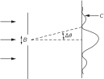
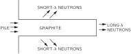

2. The Relation of Wave and Particle Viewpoints
2–1 Probability wave amplitudes#
In this chapter we shall discuss the relationship of the wave and particle viewpoints. We already know, from the last chapter, that neither the wave viewpoint nor the particle viewpoint is correct. We would always like to present things accurately, or at least precisely enough that they will not have to be changed when we learn more—it may be extended, but it will not be changed! But when we try to talk about the wave picture or the particle picture, both are approximate, and both will change. Therefore what we learn in this chapter will not be accurate in a certain sense; we will deal with some half-intuitive arguments which will be made more precise later. But certain things will be changed a little bit when we interpret them correctly in quantum mechanics. We are doing this so that you can have some qualitative feeling for some quantum phenomena before we get into the mathematical details of quantum mechanics. Furthermore, all our experiences are with waves and with particles, and so it is rather handy to use the wave and particle ideas to get some understanding of what happens in given circumstances before we know the complete mathematics of the quantum-mechanical amplitudes. We shall try to indicate the weakest places as we go along, but most of it is very nearly correct—it is just a matter of interpretation.
First of all, we know that the new way of representing the world in quantum mechanics—the new framework—is to give an amplitude for every event that can occur, and if the event involves the reception of one particle, then we can give the amplitude to find that one particle at different places and at different times. The probability of finding the particle is then proportional to the absolute square of the amplitude. In general, the amplitude to find a particle in different places at different times varies with position and time.
In some special case it can be that the amplitude varies sinusoidally in space and time like e^{i(\omega t-\mathbf{k}\cdot\mathbf{r})}, where \mathbf{r} is the vector position from some origin. (Do not forget that these amplitudes are complex numbers, not real numbers.) Such an amplitude varies according to a definite frequency \omega and wave number \mathbf{k}. Then it turns out that this corresponds to a classical limiting situation where we would have believed that we have a particle whose energy E was known and is related to the frequency by
and whose momentum \mathbf{p} is also known and is related to the wave number by
(The symbol \hbar represents the number h divided by 2\pi; \hbar=h/2\pi.)
This means that the idea of a particle is limited. The idea of a particle—its location, its momentum, etc.—which we use so much, is in certain ways unsatisfactory. For instance, if an amplitude to find a particle at different places is given by e^{i(\omega t-\mathbf{k}\cdot\mathbf{r})}, whose absolute square is a constant, that would mean that the probability of finding a particle is the same at all points. That means we do not know where it is—it can be anywhere—there is a great uncertainty in its location.
On the other hand, if the position of a particle is more or less well known and we can predict it fairly accurately, then the probability of finding it in different places must be confined to a certain region, whose length we call \Delta x. Outside this region, the probability is zero. Now this probability is the absolute square of an amplitude, and if the absolute square is zero, the amplitude is also zero, so that we have a wave train whose length is \Delta x (Fig. 2–1), and the wavelength (the distance between nodes of the waves in the train) of that wave train is what corresponds to the particle momentum.

Here we encounter a strange thing about waves; a very simple thing which has nothing to do with quantum mechanics strictly. It is something that anybody who works with waves, even if he knows no quantum mechanics, knows: namely, we cannot define a unique wavelength for a short wave train. Such a wave train does not have a definite wavelength; there is an indefiniteness in the wave number that is related to the finite length of the train, and thus there is an indefiniteness in the momentum.
2–2 Measurement of position and momentum#
Let us consider two examples of this idea—to see the reason that there is an uncertainty in the position and/or the momentum, if quantum mechanics is right. We have also seen before that if there were not such a thing—if it were possible to measure the position and the momentum of anything simultaneously—we would have a paradox; it is fortunate that we do not have such a paradox, and the fact that such an uncertainty comes naturally from the wave picture shows that everything is mutually consistent.

Here is one example which shows the relationship between the position and the momentum in a circumstance that is easy to understand. Suppose we have a single slit, and particles are coming from very far away with a certain energy—so that they are all coming essentially horizontally (Fig. 2–2). We are going to concentrate on the vertical components of momentum. All of these particles have a certain horizontal momentum p_0, say, in a classical sense. So, in the classical sense, the vertical momentum p_y, before the particle goes through the hole, is definitely known. The particle is moving neither up nor down, because it came from a source that is far away—and so the vertical momentum is of course zero. But now let us suppose that it goes through a hole whose width is B. Then after it has come out through the hole, we know the position vertically—the y -position—with considerable accuracy—namely \pm B. 1 That is, the uncertainty in position, \Delta y, is of order B. Now we might also want to say, since we know the momentum is absolutely horizontal, that \Delta p_y is zero; but that is wrong. We once knew the momentum was horizontal, but we do not know it any more. Before the particles passed through the hole, we did not know their vertical positions. Now that we have found the vertical position by having the particle come through the hole, we have lost our information on the vertical momentum! Why? According to the wave theory, there is a spreading out, or diffraction, of the waves after they go through the slit, just as for light. Therefore there is a certain probability that particles coming out of the slit are not coming exactly straight. The pattern is spread out by the diffraction effect, and the angle of spread, which we can define as the angle of the first minimum, is a measure of the uncertainty in the final angle.
How does the pattern become spread? To say it is spread means that there is some chance for the particle to be moving up or down, that is, to have a component of momentum up or down. We say chance and particle because we can detect this diffraction pattern with a particle counter, and when the counter receives the particle, say at C in Fig. 2–2, it receives the entire particle, so that, in a classical sense, the particle has a vertical momentum, in order to get from the slit up to C.
To get a rough idea of the spread of the momentum, the vertical momentum p_y has a spread which is equal to p_0\,\Delta\theta, where p_0 is the horizontal momentum. And how big is \Delta\theta in the spread-out pattern? We know that the first minimum occurs at an angle \Delta\theta such that the waves from one edge of the slit have to travel one wavelength farther than the waves from the other side—we worked that out before (Chapter 30 of Vol. I). Therefore \Delta\theta is \lambda/B, and so \Delta p_y in this experiment is p_0\lambda/B. Note that if we make B smaller and make a more accurate measurement of the position of the particle, the diffraction pattern gets wider. So the narrower we make the slit, the wider the pattern gets, and the more is the likelihood that we would find that the particle has sidewise momentum. Thus the uncertainty in the vertical momentum is inversely proportional to the uncertainty of y. In fact, we see that the product of the two is equal to p_0\lambda. But \lambda is the wavelength and p_0 is the momentum, and in accordance with quantum mechanics, the wavelength times the momentum is Planck’s constant h. So we obtain the rule that the uncertainties in the vertical momentum and in the vertical position have a product of the order h:
We cannot prepare a system in which we know the vertical position of a particle and can predict how it will move vertically with greater certainty than given by ( 2.3). That is, the uncertainty in the vertical momentum must exceed \hbar/2\Delta y, where \Delta y is the uncertainty in our knowledge of the position.
Sometimes people say quantum mechanics is all wrong. When the particle arrived from the left, its vertical momentum was zero. And now that it has gone through the slit, its position is known. Both position and momentum seem to be known with arbitrary accuracy. It is quite true that we can receive a particle, and on reception determine what its position is and what its momentum would have had to have been to have gotten there. That is true, but that is not what the uncertainty relation ( 2.3) refers to. Equation ( 2.3) refers to the predictability of a situation, not remarks about the past. It does no good to say “I knew what the momentum was before it went through the slit, and now I know the position,” because now the momentum knowledge is lost. The fact that it went through the slit no longer permits us to predict the vertical momentum. We are talking about a predictive theory, not just measurements after the fact. So we must talk about what we can predict.
Now let us take the thing the other way around. Let us take another example of the same phenomenon, a little more quantitatively. In the previous example we measured the momentum by a classical method. Namely, we considered the direction and the velocity and the angles, etc., so we got the momentum by classical analysis. But since momentum is related to wave number, there exists in nature still another way to measure the momentum of a particle—photon or otherwise—which has no classical analog, because it uses Eq. ( 2.2). We measure the wavelengths of the waves. Let us try to measure momentum in this way.

Suppose we have a grating with a large number of lines (Fig. 2–3), and send a beam of particles at the grating. We have often discussed this problem: if the particles have a definite momentum, then we get a very sharp pattern in a certain direction, because of the interference. And we have also talked about how accurately we can determine that momentum, that is to say, what the resolving power of such a grating is. Rather than derive it again, we refer to Chapter 30 of Volume I, where we found that the relative uncertainty in the wavelength that can be measured with a given grating is 1/Nm, where N is the number of lines on the grating and m is the order of the diffraction pattern. That is,
Now formula ( 2.4) can be rewritten as
where L is the distance shown in Fig. 2–3. This distance is the difference between the total distance that the particle or wave or whatever it is has to travel if it is reflected from the bottom of the grating, and the distance that it has to travel if it is reflected from the top of the grating. That is, the waves which form the diffraction pattern are waves which come from different parts of the grating. The first ones that arrive come from the bottom end of the grating, from the beginning of the wave train, and the rest of them come from later parts of the wave train, coming from different parts of the grating, until the last one finally arrives, and that involves a point in the wave train a distance L behind the first point. So in order that we shall have a sharp line in our spectrum corresponding to a definite momentum, with an uncertainty given by ( 2.4), we have to have a wave train of at least length L. If the wave train is too short, we are not using the entire grating. The waves which form the spectrum are being reflected from only a very short sector of the grating if the wave train is too short, and the grating will not work right—we will find a big angular spread. In order to get a narrower one, we need to use the whole grating, so that at least at some moment the whole wave train is scattering simultaneously from all parts of the grating. Thus the wave train must be of length L in order to have an uncertainty in the wavelength less than that given by ( 2.5). Incidentally,
Therefore
where L is the length of the wave train.
This means that if we have a wave train whose length is less than L, the uncertainty in the wave number must exceed 2\pi/L. Or the uncertainty in a wave number times the length of the wave train—we will call that for a moment \Delta x —exceeds 2\pi. We call it \Delta x because that is the uncertainty in the location of the particle. If the wave train exists only in a finite length, then that is where we could find the particle, within an uncertainty \Delta x. Now this property of waves, that the length of the wave train times the uncertainty of the wave number associated with it is at least 2\pi, is a property that is known to everyone who studies them. It has nothing to do with quantum mechanics. It is simply that if we have a finite train, we cannot count the waves in it very precisely.
Let us try another way to see the reason for that. Suppose that we have a finite train of length L; then because of the way it has to decrease at the ends, as in Fig. 2–1, the number of waves in the length L is uncertain by something like \pm1. But the number of waves in L is kL/2\pi. Thus k is uncertain, and we again get the result ( 2.7), a property merely of waves. The same thing works whether the waves are in space and k is the number of radians per centimeter and L is the length of the train, or the waves are in time and \omega is the number of radians per second and T is the “length” in time that the wave train comes in. That is, if we have a wave train lasting only for a certain finite time T, then the uncertainty in the frequency is given by
We have tried to emphasize that these are properties of waves alone, and they are well known, for example, in the theory of sound.
The point is that in quantum mechanics we interpret the wave number as being a measure of the momentum of a particle, with the rule that p=\hbar k, so that relation ( 2.7) tells us that \Delta p\approx h/\Delta x. This, then, is a limitation of the classical idea of momentum. (Naturally, it has to be limited in some ways if we are going to represent particles by waves!) It is nice that we have found a rule that gives us some idea of when there is a failure of classical ideas.
2–3 Crystal diffraction#
Next let us consider the reflection of particle waves from a crystal. A crystal is a thick thing which has a whole lot of similar atoms—we will include some complications later—in a nice array. The question is how to set the array so that we get a strong reflected maximum in a given direction for a given beam of, say, light (x-rays), electrons, neutrons, or anything else. In order to obtain a strong reflection, the scattering from all of the atoms must be in phase. There cannot be equal numbers in phase and out of phase, or the waves will cancel out. The way to arrange things is to find the regions of constant phase, as we have already explained; they are planes which make equal angles with the initial and final directions (Fig. 2–4).
If we consider two parallel planes, as in Fig. 2–4, the waves scattered from the two planes will be in phase, provided the difference in distance traveled by a wave front is an integral number of wavelengths. This difference can be seen to be 2d\sin\theta, where d is the perpendicular distance between the planes. Thus the condition for coherent reflection is
If, for example, the crystal is such that the atoms happen to lie on planes obeying condition ( 2.9) with n=1, then there will be a strong reflection. If, on the other hand, there are other atoms of the same nature (equal in density) halfway between, then the intermediate planes will also scatter equally strongly and will interfere with the others and produce no effect. So d in ( 2.9) must refer to adjacent planes; we cannot take a plane five layers farther back and use this formula!
As a matter of interest, actual crystals are not usually as simple as a single kind of atom repeated in a certain way. Instead, if we make a two-dimensional analog, they are much like wallpaper, in which there is some kind of figure which repeats all over the wallpaper. By “figure” we mean, in the case of atoms, some arrangement—calcium and a carbon and three oxygens, etc., for calcium carbonate, and so on—which may involve a relatively large number of atoms. But whatever it is, the figure is repeated in a pattern. This basic figure is called a unit cell.
The basic pattern of repetition defines what we call the lattice type; the lattice type can be immediately determined by looking at the reflections and seeing what their symmetry is. In other words, where we find any reflections at all determines the lattice type, but in order to determine what is in each of the elements of the lattice one must take into account the intensity of the scattering at the various directions. Which directions scatter depends on the type of lattice, but how strongly each scatters is determined by what is inside each unit cell, and in that way the structure of crystals is worked out.
Two photographs of x-ray diffraction patterns are shown in Figs. 2–5 and 2–6; they illustrate scattering from rock salt and myoglobin, respectively.


Incidentally, an interesting thing happens if the spacings of the nearest planes are less than \lambda/2. In this case ( 2.9) has no solution for n. Thus if \lambda is bigger than twice the distance between adjacent planes, then there is no side diffraction pattern, and the light—or whatever it is—will go right through the material without bouncing off or getting lost. So in the case of light, where \lambda is much bigger than the spacing, of course it does go through and there is no pattern of reflection from the planes of the crystal.

This fact also has an interesting consequence in the case of piles which make neutrons (these are obviously particles, for anybody’s money!). If we take these neutrons and let them into a long block of graphite, the neutrons diffuse and work their way along (Fig. 2–7). They diffuse because they are bounced by the atoms, but strictly, in the wave theory, they are bounced by the atoms because of diffraction from the crystal planes. It turns out that if we take a very long piece of graphite, the neutrons that come out the far end are all of long wavelength! In fact, if one plots the intensity as a function of wavelength, we get nothing except for wavelengths longer than a certain minimum (Fig. 2–8). In other words, we can get very slow neutrons that way. Only the slowest neutrons come through; they are not diffracted or scattered by the crystal planes of the graphite, but keep going right through like light through glass, and are not scattered out the sides. There are many other demonstrations of the reality of neutron waves and waves of other particles.

2–4 The size of an atom#
We now consider another application of the uncertainty relation, Eq. ( 2.3). It must not be taken too seriously; the idea is right but the analysis is not very accurate. The idea has to do with the determination of the size of atoms, and the fact that, classically, the electrons would radiate light and spiral in until they settle down right on top of the nucleus. But that cannot be right quantum-mechanically because then we would know where each electron was and how fast it was moving.
Suppose we have a hydrogen atom, and measure the position of the electron; we must not be able to predict exactly where the electron will be, or the momentum spread will then turn out to be infinite. Every time we look at the electron, it is somewhere, but it has an amplitude to be in different places so there is a probability of it being found in different places. These places cannot all be at the nucleus; we shall suppose there is a spread in position of order a. That is, the distance of the electron from the nucleus is usually about a. We shall determine a by minimizing the total energy of the atom.
The spread in momentum is roughly \hbar/a because of the uncertainty relation, so that if we try to measure the momentum of the electron in some manner, such as by scattering x-rays off it and looking for the Doppler effect from a moving scatterer, we would expect not to get zero every time—the electron is not standing still—but the momenta must be of the order p\approx \hbar/a. Then the kinetic energy is roughly \frac{1}{2}mv^2= p^2/2m= \hbar^2/2ma^2. (In a sense, this is a kind of dimensional analysis to find out in what way the kinetic energy depends upon the reduced Planck constant, upon m, and upon the size of the atom. We need not trust our answer to within factors like 2, \pi, etc. We have not even defined a very precisely.) Now the potential energy is minus e^2 over the distance from the center, say -e^2/a, where, as defined in Volume I, e^2 is the charge of an electron squared, divided by 4\pi\epsilon_0. Now the point is that the potential energy is reduced if a gets smaller, but the smaller a is, the higher the momentum required, because of the uncertainty principle, and therefore the higher the kinetic energy. The total energy is
We do not know what a is, but we know that the atom is going to arrange itself to make some kind of compromise so that the energy is as little as possible. In order to minimize E, we differentiate with respect to a, set the derivative equal to zero, and solve for a. The derivative of E is
and setting dE/da=0 gives for a the value
This particular distance is called the Bohr radius, and we have thus learned that atomic dimensions are of the order of angstroms, which is right. This is pretty good—in fact, it is amazing, since until now we have had no basis for understanding the size of atoms! Atoms are completely impossible from the classical point of view, since the electrons would spiral into the nucleus.
Now if we put the value ( 2.12) for a_0 into ( 2.10) to find the energy, it comes out
What does a negative energy mean? It means that the electron has less energy when it is in the atom than when it is free. It means it is bound. It means it takes energy to kick the electron out; it takes energy of the order of 13.6 eV to ionize a hydrogen atom. We have no reason to think that it is not two or three times this—or half of this—or (1/\pi) times this, because we have used such a sloppy argument. However, we have cheated, we have used all the constants in such a way that it happens to come out the right number! This number, 13.6 electron volts, is called a Rydberg of energy; it is the ionization energy of hydrogen.
So we now understand why we do not fall through the floor. As we walk, our shoes with their masses of atoms push against the floor with its mass of atoms. In order to squash the atoms closer together, the electrons would be confined to a smaller space and, by the uncertainty principle, their momenta would have to be higher on the average, and that means high energy; the resistance to atomic compression is a quantum-mechanical effect and not a classical effect. Classically, we would expect that if we were to draw all the electrons and protons closer together, the energy would be reduced still further, and the best arrangement of positive and negative charges in classical physics is all on top of each other. This was well known in classical physics and was a puzzle because of the existence of the atom. Of course, the early scientists invented some ways out of the trouble—but never mind, we have the right way out, now!
Incidentally, although we have no reason to understand it at the moment, in a situation where there are many electrons it turns out that they try to keep away from each other. If one electron is occupying a certain space, then another does not occupy the same space. More precisely, there are two spin cases, so that two can sit on top of each other, one spinning one way and one the other way. But after that we cannot put any more there. We have to put others in another place, and that is the real reason that matter has strength. If we could put all the electrons in the same place, it would condense even more than it does. It is the fact that the electrons cannot all get on top of each other that makes tables and everything else solid.
Obviously, in order to understand the properties of matter, we will have to use quantum mechanics and not be satisfied with classical mechanics.
2–5 Energy levels#
We have talked about the atom in its lowest possible energy condition, but it turns out that the electron can do other things. It can jiggle and wiggle in a more energetic manner, and so there are many different possible motions for the atom. According to quantum mechanics, in a stationary condition there can only be definite energies for an atom. We make a diagram (Fig. 2–9) in which we plot the energy vertically, and we make a horizontal line for each allowed value of the energy. When the electron is free, i.e., when its energy is positive, it can have any energy; it can be moving at any speed. But bound energies are not arbitrary. The atom must have one or another out of a set of allowed values, such as those in Fig. 2–9.
Now let us call the allowed values of the energy E_0, E_1, E_2, E_3. If an atom is initially in one of these “excited states,” E_1, E_2, etc., it does not remain in that state forever. Sooner or later it drops to a lower state and radiates energy in the form of light. The frequency of the light that is emitted is determined by conservation of energy plus the quantum-mechanical understanding that the frequency of the light is related to the energy of the light by ( 2.1). Therefore the frequency of the light which is liberated in a transition from energy E_3 to energy E_1 (for example) is
This, then, is a characteristic frequency of the atom and defines a spectral emission line. Another possible transition would be from E_3 to E_0. That would have a different frequency
Another possibility is that if the atom were excited to the state E_1 it could drop to the ground state E_0, emitting a photon of frequency
The reason we bring up three transitions is to point out an interesting relationship. It is easy to see from ( 2.14), ( 2.15), and ( 2.16) that
In general, if we find two spectral lines, we shall expect to find another line at the sum of the frequencies (or the difference in the frequencies), and that all the lines can be understood by finding a series of levels such that every line corresponds to the difference in energy of some pair of levels. This remarkable coincidence in spectral frequencies was noted before quantum mechanics was discovered, and it is called the Ritz combination principle. This is again a mystery from the point of view of classical mechanics. Let us not belabor the point that classical mechanics is a failure in the atomic domain; we seem to have demonstrated that pretty well.
We have already talked about quantum mechanics as being represented by amplitudes which behave like waves, with certain frequencies and wave numbers. Let us observe how it comes about from the point of view of amplitudes that the atom has definite energy states. This is something we cannot understand from what has been said so far, but we are all familiar with the fact that confined waves have definite frequencies. For instance, if sound is confined to an organ pipe, or anything like that, then there is more than one way that the sound can vibrate, but for each such way there is a definite frequency. Thus an object in which the waves are confined has certain resonance frequencies. It is therefore a property of waves in a confined space—a subject which we will discuss in detail with formulas later on—that they exist only at definite frequencies. And since the general relation exists between frequencies of the amplitude and energy, we are not surprised to find definite energies associated with electrons bound in atoms.
2–6 Philosophical implications#
Let us consider briefly some philosophical implications of quantum mechanics. As always, there are two aspects of the problem: one is the philosophical implication for physics, and the other is the extrapolation of philosophical matters to other fields. When philosophical ideas associated with science are dragged into another field, they are usually completely distorted. Therefore we shall confine our remarks as much as possible to physics itself.
First of all, the most interesting aspect is the idea of the uncertainty principle; making an observation affects the phenomenon. It has always been known that making observations affects a phenomenon, but the point is that the effect cannot be disregarded or minimized or decreased arbitrarily by rearranging the apparatus. When we look for a certain phenomenon we cannot help but disturb it in a certain minimum way, and the disturbance is necessary for the consistency of the viewpoint. The observer was sometimes important in prequantum physics, but only in a trivial sense. The problem has been raised: if a tree falls in a forest and there is nobody there to hear it, does it make a noise? A real tree falling in a real forest makes a sound, of course, even if nobody is there. Even if no one is present to hear it, there are other traces left. The sound will shake some leaves, and if we were careful enough we might find somewhere that some thorn had rubbed against a leaf and made a tiny scratch that could not be explained unless we assumed the leaf were vibrating. So in a certain sense we would have to admit that there is a sound made. We might ask: was there a sensation of sound? No, sensations have to do, presumably, with consciousness. And whether ants are conscious and whether there were ants in the forest, or whether the tree was conscious, we do not know. Let us leave the problem in that form.
Another thing that people have emphasized since quantum mechanics was developed is the idea that we should not speak about those things which we cannot measure. (Actually relativity theory also said this.) Unless a thing can be defined by measurement, it has no place in a theory. And since an accurate value of the momentum of a localized particle cannot be defined by measurement it therefore has no place in the theory. The idea that this is what was the matter with classical theory is a false position. It is a careless analysis of the situation. Just because we cannot measure position and momentum precisely does not a priori mean that we cannot talk about them. It only means that we need not talk about them. The situation in the sciences is this: A concept or an idea which cannot be measured or cannot be referred directly to experiment may or may not be useful. It need not exist in a theory. In other words, suppose we compare the classical theory of the world with the quantum theory of the world, and suppose that it is true experimentally that we can measure position and momentum only imprecisely. The question is whether the ideas of the exact position of a particle and the exact momentum of a particle are valid or not. The classical theory admits the ideas; the quantum theory does not. This does not in itself mean that classical physics is wrong. When the new quantum mechanics was discovered, the classical people—which included everybody except Heisenberg, Schrödinger, and Born—said: “Look, your theory is not any good because you cannot answer certain questions like: what is the exact position of a particle?, which hole does it go through?, and some others.” Heisenberg’s answer was: “I do not need to answer such questions because you cannot ask such a question experimentally.” It is that we do not have to. Consider two theories (a) and (b); (a) contains an idea that cannot be checked directly but which is used in the analysis, and the other, (b), does not contain the idea. If they disagree in their predictions, one could not claim that (b) is false because it cannot explain this idea that is in (a), because that idea is one of the things that cannot be checked directly. It is always good to know which ideas cannot be checked directly, but it is not necessary to remove them all. It is not true that we can pursue science completely by using only those concepts which are directly subject to experiment.
In quantum mechanics itself there is a probability amplitude, there is a potential, and there are many constructs that we cannot measure directly. The basis of a science is its ability to predict. To predict means to tell what will happen in an experiment that has never been done. How can we do that? By assuming that we know what is there, independent of the experiment. We must extrapolate the experiments to a region where they have not been done. We must take our concepts and extend them to places where they have not yet been checked. If we do not do that, we have no prediction. So it was perfectly sensible for the classical physicists to go happily along and suppose that the position—which obviously means something for a baseball—meant something also for an electron. It was not stupidity. It was a sensible procedure. Today we say that the law of relativity is supposed to be true at all energies, but someday somebody may come along and say how stupid we were. We do not know where we are “stupid” until we “stick our neck out,” and so the whole idea is to put our neck out. And the only way to find out that we are wrong is to find out what our predictions are. It is absolutely necessary to make constructs.
We have already made a few remarks about the indeterminacy of quantum mechanics. That is, that we are unable now to predict what will happen in physics in a given physical circumstance which is arranged as carefully as possible. If we have an atom that is in an excited state and so is going to emit a photon, we cannot say when it will emit the photon. It has a certain amplitude to emit the photon at any time, and we can predict only a probability for emission; we cannot predict the future exactly. This has given rise to all kinds of nonsense and questions on the meaning of freedom of will, and of the idea that the world is uncertain.
Of course we must emphasize that classical physics is also indeterminate, in a sense. It is usually thought that this indeterminacy, that we cannot predict the future, is an important quantum-mechanical thing, and this is said to explain the behavior of the mind, feelings of free will, etc. But if the world were classical—if the laws of mechanics were classical—it is not quite obvious that the mind would not feel more or less the same. It is true classically that if we knew the position and the velocity of every particle in the world, or in a box of gas, we could predict exactly what would happen. And therefore the classical world is deterministic. Suppose, however, that we have a finite accuracy and do not know exactly where just one atom is, say to one part in a billion. Then as it goes along it hits another atom, and because we did not know the position better than to one part in a billion, we find an even larger error in the position after the collision. And that is amplified, of course, in the next collision, so that if we start with only a tiny error it rapidly magnifies to a very great uncertainty. To give an example: if water falls over a dam, it splashes. If we stand nearby, every now and then a drop will land on our nose. This appears to be completely random, yet such a behavior would be predicted by purely classical laws. The exact position of all the drops depends upon the precise wigglings of the water before it goes over the dam. How? The tiniest irregularities are magnified in falling, so that we get complete randomness. Obviously, we cannot really predict the position of the drops unless we know the motion of the water absolutely exactly.
Speaking more precisely, given an arbitrary accuracy, no matter how precise, one can find a time long enough that we cannot make predictions valid for that long a time. Now the point is that this length of time is not very large. It is not that the time is millions of years if the accuracy is one part in a billion. The time goes, in fact, only logarithmically with the error, and it turns out that in only a very, very tiny time we lose all our information. If the accuracy is taken to be one part in billions and billions and billions—no matter how many billions we wish, provided we do stop somewhere—then we can find a time less than the time it took to state the accuracy—after which we can no longer predict what is going to happen! It is therefore not fair to say that from the apparent freedom and indeterminacy of the human mind, we should have realized that classical “deterministic” physics could not ever hope to understand it, and to welcome quantum mechanics as a release from a “completely mechanistic” universe. For already in classical mechanics there was indeterminability from a practical point of view.